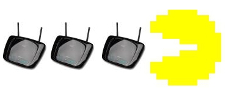

Na początku przyznam się, że liczyłem na troszkę większe zainteresowanie. Niestety zgłoszeń nie było za wiele, a szkoda… Czytaj dalej »
Tag Archive | "konkurs"
Tags: F-Secure, F-Secure Internet Security, F-Secure Internet Security 2013, F-Secure Internet Security recenzja, F-Secure opinie, F-Secure recenzja, konkurs, recenzja F-Secure
Recenzja F-Secure Internet Security 2013 + KONKURS (aktualizacja)
Posted on 08 października 2012 by Franek
Mogłoby wydawać się, że ten blog nie jest najlepszym miejscem do recenzji tego typu oprogramowania. Poruszane są tu głównie kwestie powiązane z GNU/Linux i tematy około Open Source. A jak wiadomo na systemach Linux nie ma aż takiej wielkiej potrzeby instalacji tego typu programów, wprawdzie są dostępne Antywirusy, ale kto ich używa? Zrobimy jednak mały wyjątek, głównie ze względu na czytelników. Bo wystarczy spojrzeć w statystyki aby dowiedzieć się z nich, że zdecydowana większość czytelników używa systemów Microsoft Windows (60% Windows, 35% Linux, 2% Apple), jest też wersja na Androida. Robi się ciekawe, dlatego zapraszam do zapoznania się z moją recenzją pakietu F-Secure Internet Security 2013.

Tags: GNOME, GNOME 3, GNOME Promo DVD, GNOME SHELL, GNOME3, konkurs, openSUSE
Wszystko w rękach Poczty Polskiej
Posted on 12 lipca 2011 by Franek
Joł, krótkie ogłoszenie parafialne. Czytaj dalej »
Tags: GNOME, GNOME 3, GNOME Promo DVD, GNOME SHELL, GNOME3, konkurs, openSUSE
NibyBlog.pl rozdaje tłoczone płyty DVD z GNOME 3! [AKTUALIZACJA]
Posted on 20 czerwca 2011 by Franek
Join us now and share the software
Danie dnia: piękny czarny tłoczony krążek DVD w stylowym kartoniku w “kolorze gnomeowym”. A w środku hybrydowy obraz openSUSE wraz z nowiutkim GNOME 3 na pokładzie działający jako Live DVD. :)

Tags: CISCO, konkurs, Linksys, NibyBlog, router, WRT160NL, wygraj router
Podsumowanie konkursu oraz… LISTA ZWYCIĘZCÓW
Posted on 05 czerwca 2011 by Franek
Witam wszystkich nibyblogowiczów a w szczególności konkursowiczów. Upalna, duszna i z pozoru nudna niedziela może okazać się dla niektórych z Was szczęśliwa. Przynajmniej mam taką nadzieję. Tak, wiem ogłoszenie laureatów konkursu miało nastąpić w dniu jutrzejszym (6 czerwca), jednak pewna zmiana w życiu zawodowym która spowodowała, że jutro będę od rana do wieczora w pracy przyśpieszyła ogłoszenie wyników konkursu.

Tags: CISCO, konkurs, Linksys, NibyBlog, router, WRT160NL, wygraj router
Router, komu router?
Posted on 03 czerwca 2011 by Franek
Ostatni dzień konkursu, chcesz zgarnąć super router? Śpiesz się, to już ostatnia szansa! Czytaj dalej »
Tags: CISCO, konkurs, Linksys, NibyBlog, router, WRT160NL, wygraj router
Zegar tyka i odlicza! ;P
Posted on 31 maja 2011 by Franek
Czas jest nieubłagany, a koniec konkursu na piątek przewidziany! Być może to ostatni dzwonek na to aby wziąć w nim udział. Śpiesz się! ;) Czytaj dalej »

Tags: CISCO, konkurs, Linksys, NibyBlog, router, WRT160NL, wygraj router
Routery uciekają!
Posted on 25 maja 2011 by Franek
Zbyt mała ilość zgłoszeń do konkursu wymusiła na mnie przedłużenie jego trwania. Tak więc niniejszym przedłużam czas trwania konkursu o jeden tydzień. Konkurs będzie trwał do 3 czerwca włącznie – do tego czasu należy przysyłać prace konkursowe. Rozwiązanie konkursu oraz ogłoszenie zwycięzców nastąpi 6 czerwca. Jest to termin ostateczny i nie odwołalny.
Tags: CISCO, konkurs, Linksys, NibyBlog, router, WRT160NL, wygraj router
Ogłoszenia parafialne
Posted on 22 maja 2011 by Franek
Do zakończenia konkursu już bliżej niż dalej, konkurs kończy się w najbliższy piątek. Dla wszystkich dwojga konkursowiczów to dobra wiadomość, bo na razie nadesłane zostały tylko dwie prace na konkurs. ;) Naprawdę nikt inny nie chce wsiąść udziału? Nie to, że namawiam, ale…

Tags: Facebook, facebook to zuo, facebook to zło, hejter, hipister, humor, konkurs, NibyBlog, zuo, zło
Pfff co to za konkurs? Facebook jest zły!
Posted on 13 maja 2011 by Franek
Facebook jest narzędziem w rękach diabła wcielonego. Wie o tym każdy hipister internetowy. Niepodważalnym faktem jest, że Facebook podobnie jak Google i Yahoo! pozostaje w spisku z rządem Stanów Zjednoczonych. Tak, tych stanów którymi rządzi ten co oba ma! Nazwisko wydaję się nieprzypadkowe i sugeruje, że włada on oboma światami. Wszystkie wymienione wyżej serwisy z Facebookiem na czele mają wbudowane interfejsy, które umożliwiają szpiegowską działalność na rzecz US i A.

Tags: CISCO, konkurs, Linksys, NibyBlog, router, WRT160NL, wygraj router
KONKURS: do wygrania trzy routery Linksys! [aktualizacja]
Posted on 11 maja 2011 by Franek
Podsumowanie konkursu oraz… LISTA ZWYCIĘZCÓW
W tym roku Wielkanocne zajączki zaspały i przegapiły okres rozdawania prezentów. Jednak co się odwlecze to nie uciecze, dlatego zajączki wspólnie z koncernem Cisco Linksys Polska oraz NibyBlog.pl zorganizowały konkurs. Konkurs z nagrodami i to jakimi! Do wygrania są trzy routery Cisco Linksys WRT160NL, nie jest to zwyczajny sprzęt. Routery te są “Powered by Linux”, co już samo w sobie dla wielu jest niewątpliwą gratką. Jest jeszcze coś, można na nich zainstalować alternatywne oprogramowanie na przykład OpenWrt i cieszyć się pełnoprawną dystrybucją GNU/Linux uruchomioną na routerze .

MiniBlog
- Ewolucja wyglądu Androida
18 czerwca 2013 | 19:33Czyli jak z brzydkiego kaczątka powoli rodzi się łabędź ;-)
Dalej »
- Open Source Day 2013
14 maja 2013 | 10:08Dalej »
- Akcja darmowego hostingu [UPDATE]
5 kwietnia 2013 | 22:04Dalej »
-
 Archiwum MiniBlog »
Archiwum MiniBlog »
-
ARCHIWUM
- wrzesień 2022 (1)
- grudzień 2013 (1)
- listopad 2013 (2)
- wrzesień 2013 (1)
- czerwiec 2013 (1)
- maj 2013 (4)
- kwiecień 2013 (4)
- marzec 2013 (1)
- luty 2013 (1)
- styczeń 2013 (1)
- grudzień 2012 (15)
- listopad 2012 (7)
- październik 2012 (4)
- wrzesień 2012 (4)
- sierpień 2012 (7)
- lipiec 2012 (19)
- czerwiec 2012 (3)
- maj 2012 (1)
- kwiecień 2012 (5)
- marzec 2012 (4)
- luty 2012 (12)
- styczeń 2012 (13)
- grudzień 2011 (10)
- listopad 2011 (6)
- październik 2011 (2)
- wrzesień 2011 (1)
- sierpień 2011 (2)
- lipiec 2011 (2)
- czerwiec 2011 (8)
- maj 2011 (32)
- kwiecień 2011 (11)
- marzec 2011 (10)
- styczeń 2011 (2)
- listopad 2010 (4)
- październik 2010 (12)
- wrzesień 2010 (17)
- sierpień 2010 (32)
- lipiec 2010 (10)
- czerwiec 2010 (3)
- maj 2010 (7)
- kwiecień 2010 (8)
- lipiec 2009 (5)
- czerwiec 2009 (2)
- marzec 2009 (15)
- luty 2009 (21)
- styczeń 2009 (5)